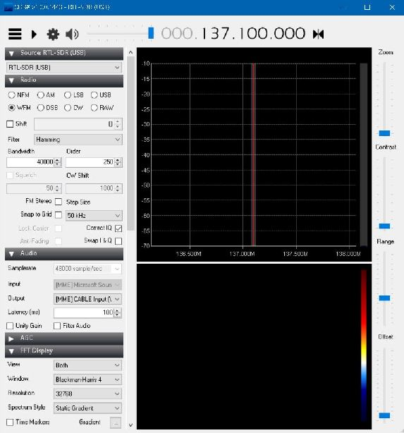

« Previous -
Version 5/15
(diff) -
Next » -
Current version
Skylar Hoffert, 09/20/2018 05:47 pm
Software Setup¶
Introduction¶
These instructions cover the software set up of the Ground Sphere Mk3.
Note, these steps are for Windows (tested on Windows 10).
1. Download required Software¶
- Download the following files
- "Windows SDR Package - SDR Sharp": https://airspy.com/download/ (ver 1.0.0.1443)
- "WXtoImg": https://wxtoimgrestored.xyz/downloads/ (ver 2.10.11)
- "VBCable": https://www.vb-audio.com/Cable/ (pack 43)
2. Install SDR Tools¶
- TODO
- Open SDR Sharp
- Select WFM in the Radio section
- Set the bandwidth to 40000 in the Radio section

3. Install WXtoImg¶
- TODO
- Open WXtoImg
- Modify your location
- Select Options -> Ground Station Location
- Modify latitude and longitude to match your ground station location
- Select File -> Update Keplers to update NOAA satellite TLEs
4. Install VBCable¶
- TODO
- Modify a setting in SDR Sharp
- Run SDR Sharp (if not already open)
- In the Audio section, select the Output selector to CABLE Input
{kind=link}